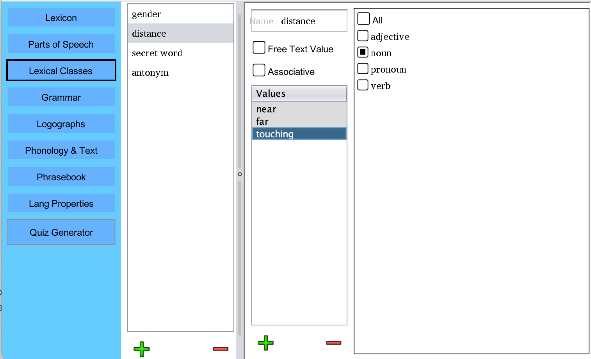
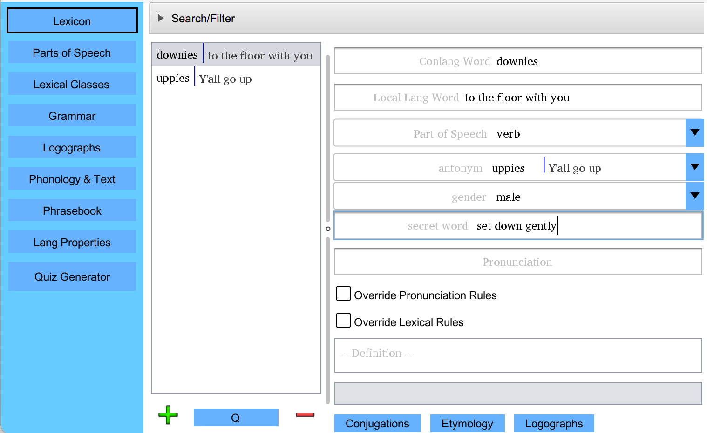
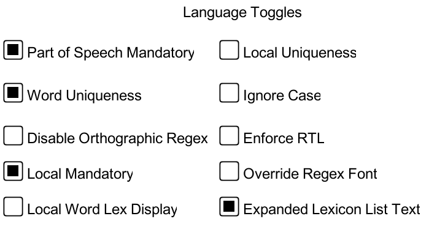
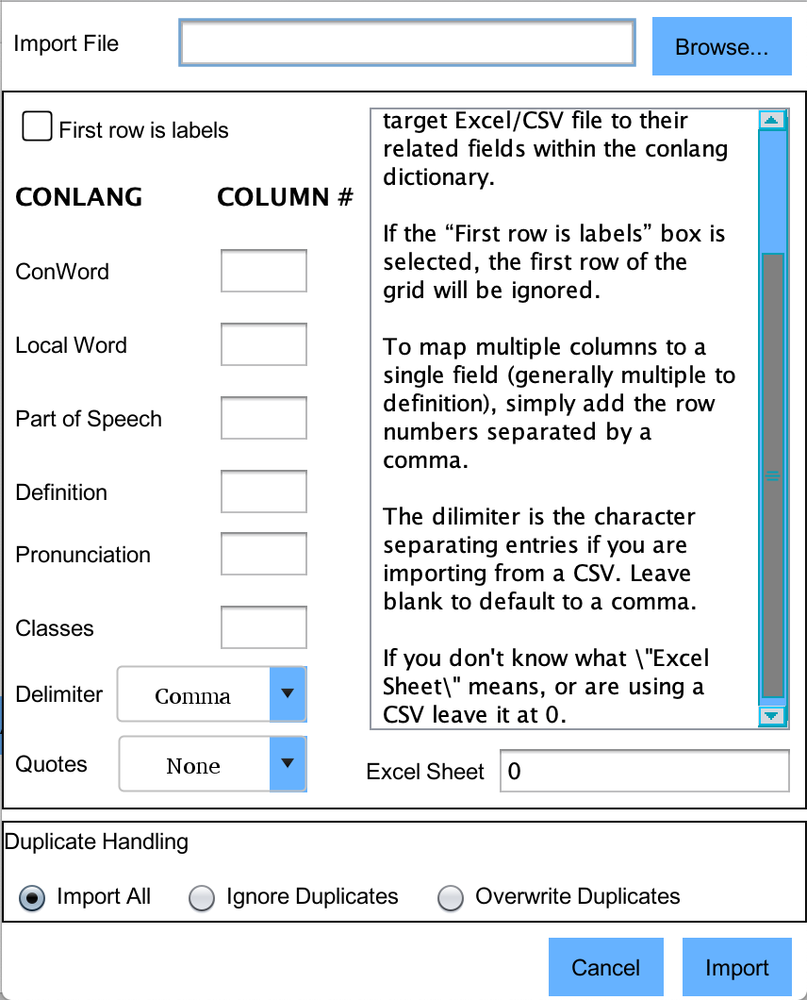

Version 2.4
i.
Overview/Welcome
ii. What's New
1---- Installation
2---- Basic Functionality
- Parts of Speech
- Conjugations/Declensions
- Autogeneration of Conjugations/Declensions
- Word Classes
- Word Quickentry
- Saving
- Language Properties
- Phonology
- Romanization
- Images in Text
- Family Window
- Using the Check Lexicon Tool
3---- Importing and Exporting to/from Excel or CSV
4---- Etymology Engine
5---- Statistics Report
6---- Logographic Dictionary
7---- Publishing to PDF
8---- Interactive IPA Window
9---- Quiz Generation Tool
10---- Language Reversion (Disaster Recovery)
11---- Grammar Guide
12---- New Features
13---- Upcoming Features
14---- Known Bugs
15---- Additional Resources
16---- Copyright and contact info
ii. What's New
1---- Installation
2---- Basic Functionality
- Parts of Speech
- Conjugations/Declensions
- Autogeneration of Conjugations/Declensions
- Word Classes
- Word Quickentry
- Saving
- Language Properties
- Phonology
- Romanization
- Images in Text
- Family Window
- Using the Check Lexicon Tool
3---- Importing and Exporting to/from Excel or CSV
4---- Etymology Engine
5---- Statistics Report
6---- Logographic Dictionary
7---- Publishing to PDF
8---- Interactive IPA Window
9---- Quiz Generation Tool
10---- Language Reversion (Disaster Recovery)
11---- Grammar Guide
12---- New Features
13---- Upcoming Features
14---- Known Bugs
15---- Additional Resources
16---- Copyright and contact info
WELCOME/OVERVIEW
Welcome to PolyGlot, an open
source
tool set that helps to build constructed languages! PolyGlot
is a project that I have been working on for some time, and it
continues to become more stable and capable with each release. If you
have ideas, find bugs, or have any comments at all, please feel free to
email me at draquemail@gmail.com or
post them on PolyGlot's issues page!
WHAT’S NEW
Heyo, everyone! I've got a new version of PolyGlot with some nice new features to share! On top of the most obvious improvements (the declension display and the lexical checking tool), I've taken some time to seriously rework and improve the automated testing in PolyGlot. It started as a tiny side project, but the size at this point absolutely requires a testing suite to help keep bugs down. Additionally, there are a lot of tiny life improvement changes and annoying error fixes that are not listed below (for a full list, check out the issues page linked above and check out what's been closed). As always, please enjoy, everyone!
- Completely reworked Declension/Conjugation Interface with grid based display (the big one)
- Lexical Checker tool added to allow users to easily spot all problem areas in lexicon
- Can export to Excel now with all declined/conjugated forms
- Spaces now allowed in automatically generated pronunciations
- Detect/Prevent Zipped Execution
- Cleaned up file saving
- Users can now copy full conjugation ruleset to given dimension to save time when building word forms
- Export of overridden conjugations to excel
- Checks/alerts user to repeated values in alphabetic ordering section
- Etymology tooltip defaults to local language synonym if no longform definition
- Compatibility dropped to Java 8.x again
BUGS FIXED:
- Options reset on load of new file
- Oversized INI file lead to "JVM not installed" message on startup
- First lexicon entry part of speech lost on load
- Resolution Scaling On Windows (partial fix implemented, the rest of the problem is within Java itself)
- On initial load of non-versioned file, uncaught error can occur
- Various Excel Export issues
- "Java Not Installed" message erroneously displaying from frontend on some PCs
- Corrected issue where <br> tags could invisibly multiply exponentially, causing massive slowdowns
- Declension rule order would revert/not save when exiting the menu
- Copying from MS Office apps on the PC (and some macs) resulted in a black box
- Pronunciation/romanization of words terminated early under circumstance of word being longer than max depth for recursing patterns
INSTALLATION
PolyGlot is a Java program, and requires the Java Virtual Machine 1.8
or higher to run. This is available for free at https://java.com/en/download/index.jsp.
PolyGlot will run on any version of Java newer than Java 1.8, but it is
recommended that you have the highest version your operating system
will support. NOTE: Most operating systems should be able to unzip files,
but programs such as 7Zip are available online for free.
PolyGlot MUST be unzipped to function correctly. It cannot be run from within the zip file that you've downloaded, and many of its functions will fail in unpredictable ways if you attempt to run it directly from the zip file.
PolyGlot MUST be unzipped to function correctly. It cannot be run from within the zip file that you've downloaded, and many of its functions will fail in unpredictable ways if you attempt to run it directly from the zip file.
WINDOWS:
If Java is installed, you only need to unzip the contents of the
PolyGlot program to a folder and double click the frontend executable file.
This will associate PGT filetypes with the frontend so that double clicking
opens them correctly.
NOTE FOR WINDOWS USERS WITH WINRAR: WinRAR tends to associate itself with jar files as archives. This keeps them from executing properly. Follow these instructions to correct the issue.
NOTE FOR WINDOWS USERS WITH WINRAR: WinRAR tends to associate itself with jar files as archives. This keeps them from executing properly. Follow these instructions to correct the issue.
- Open WinRAR
- Click Options->Settings
- Click the Integration tab
- Under "Associate WinRAR with," uncheck the JAR checkbox
- Click OK and close WinRAR.
MAC:
Unzip PlyGlot into a folder and double click PolyGlot.jar to run!
LINUX:
Simply unzip the files where you like and run! For convenience, there is a script
which opens PolyGlot included.
NOTE FOR LINUX USERS: Before using PolyGlot, most users of Linux will have to make the jar file executable. To do this, open a command prompt, navigate to the folder you have extracted PolyGlot to, and enter the following line: "chmod +x PolyGlot.jar". Depending on your settings, you may need to enter your admin password to do this.
Additionally, some builds of Linux come with OpenJDK 7, which does not include JavaFX (a necessary component for PolyGlot's interface). Please upgrade to OpenJDK 8 if you're using Linux and still on 7. This can be done through the Package Manager and search for JavaFX or the full name, java-openjfx.
An example PolyGlot.desktop file is provided, and can be copied in ~/.local/share/applications/ so that PolyGlot can be launched from the menu or application launcher. The paths of files in entries Exec and Icon must be adapter to the location where you installed PolyGlot.
NOTE FOR ARCH LINUX USERS: You must install JFX manually to properly use PolyGlot.
NOTE FOR FEDORA USERS: Alternate versions of openJDK/openJFK must be used for PolyGlot to work correctly. Use the line below in a terminal.
sudo dnf install java-1.8.0-openjdk-openjfx
NOTE FOR LINUX USERS: Before using PolyGlot, most users of Linux will have to make the jar file executable. To do this, open a command prompt, navigate to the folder you have extracted PolyGlot to, and enter the following line: "chmod +x PolyGlot.jar". Depending on your settings, you may need to enter your admin password to do this.
Additionally, some builds of Linux come with OpenJDK 7, which does not include JavaFX (a necessary component for PolyGlot's interface). Please upgrade to OpenJDK 8 if you're using Linux and still on 7. This can be done through the Package Manager and search for JavaFX or the full name, java-openjfx.
An example PolyGlot.desktop file is provided, and can be copied in ~/.local/share/applications/ so that PolyGlot can be launched from the menu or application launcher. The paths of files in entries Exec and Icon must be adapter to the location where you installed PolyGlot.
NOTE FOR ARCH LINUX USERS: You must install JFX manually to properly use PolyGlot.
NOTE FOR FEDORA USERS: Alternate versions of openJDK/openJFK must be used for PolyGlot to work correctly. Use the line below in a terminal.
sudo dnf install java-1.8.0-openjdk-openjfx
BASIC FUNCTIONALITY
When you first open PolyGlot, you'll see the welcome screen with the
primary modules listed to the left as buttons. These modules contain the
most basic elements of language creation. Here, you can open an existing
PolyGlot library or simply click one of the modules and begin to edit a
blank language file.

If you click the Lexicon button, you'll see an empty dictionary. If
you
have an Excel sheet with a language that preexists, you can skip to
section 2, which goes over how to import them. Otherwise, keep reading
to see how to start your dictionary! Below is the screen you'll see
most often when editing your wordlist. I have loaded Lodenkur, my own
conlang, as an example.

Adding and removing words is done with the + and - buttons beneath the
word list on the left. On the right are all of the word properties.
Below is what the window looks like after creating a new word. Creating
parts of speech and classes of words (gender, for example) must be done
before assigning values to these fields. Both are covered elsewhere in
this document.

The current word is illegal, as the ConWord field is completely blank.
The reason for the illegality is displayed in the error box, with the
offending field highlighted in red. You can set other constraints to
word legality elsewhere, but the ConWord being more than a blank space
is one unalterable rule.
The NatLang field is where you put the natural language synonym(s), if any, for the word. The part of speech dropbox allows you to give a part of speech to the word.
The pronunciation field can be filled in manually, but it is more typical for users to define phonemic orthographies which will auto-populate this field. If you select the checkbox beneath the pronunciation field, pronunciation auto-generation will be overridden for the currently selected word, allowing words with exceptional pronunciations.
The Override Lexical Rules checkbox will tell PolyGlot that you wish to enter a word which breaks typical rules, and will unlock the lexicon list, even if the word would otherwise be illegal.
In the definition field, you can write a more freeform definition of your word. This is particularly useful for words that have no direct translation.
The Conjugations and Logographs buttons open windows to functionality that is described in full later in this document.
The NatLang field is where you put the natural language synonym(s), if any, for the word. The part of speech dropbox allows you to give a part of speech to the word.
The pronunciation field can be filled in manually, but it is more typical for users to define phonemic orthographies which will auto-populate this field. If you select the checkbox beneath the pronunciation field, pronunciation auto-generation will be overridden for the currently selected word, allowing words with exceptional pronunciations.
The Override Lexical Rules checkbox will tell PolyGlot that you wish to enter a word which breaks typical rules, and will unlock the lexicon list, even if the word would otherwise be illegal.
In the definition field, you can write a more freeform definition of your word. This is particularly useful for words that have no direct translation.
The Conjugations and Logographs buttons open windows to functionality that is described in full later in this document.

If you click the Search/Filter bar along the top of the Lexicon window,
a filter menu slides down (shown above). Here, you can filter words by
any of their main properties. The ConWord filter field will filter not
only on words' base forms, but also any declensions/conjugations of words.
Fields are compatible with regex expressions. Only word roots that have been used
in the etymology engine will show up in the dropdown.
- Parts of Speech

In this module, you define your language's parts of
speech. . Every word you create in
PolyGlot may be assigned a type from the list that you define. Nouns, verbs,
adjectives and anay other types of words your language uses should
be created here. Once created, they will populate in the drop down
boxes of the main screen. You can name the types and add notes as is
appropriate. Types can be added and deleted with the respective buttons
on the above screen.
It is worth noting that classes of words (such as gender) should not be created here. Their creation is handled elsewhere in PloyGlot and covered later in this document.
The name field allows you to give the type a name.
The notes field is useful for defining types that are nonstandard.
The pattern field allows you to restrict the forms that words of a given type may take via a regular expression. For example, the pattern ".*ru$" would tell PolyGlot that all words of a given type must end in the characters "ru". The pattern shown in the above illustration enforces the rule that verbs must end with the character for "lo" in Lodenkur.
The Conjugations/Declensions setup and the Conjugations/Declensions Autogeneration are advanced features covered in the next section of this guide.
The Pronunciation Mandatory checkbox tells PolyGlot to enforce pronunciations as mandatory for this type.
The Definition Mandatory checkbox tells PolyGlot to enforce definitions as mandatory for this type.
It is worth noting that classes of words (such as gender) should not be created here. Their creation is handled elsewhere in PloyGlot and covered later in this document.
The name field allows you to give the type a name.
The notes field is useful for defining types that are nonstandard.
The pattern field allows you to restrict the forms that words of a given type may take via a regular expression. For example, the pattern ".*ru$" would tell PolyGlot that all words of a given type must end in the characters "ru". The pattern shown in the above illustration enforces the rule that verbs must end with the character for "lo" in Lodenkur.
The Conjugations/Declensions setup and the Conjugations/Declensions Autogeneration are advanced features covered in the next section of this guide.
The Pronunciation Mandatory checkbox tells PolyGlot to enforce pronunciations as mandatory for this type.
The Definition Mandatory checkbox tells PolyGlot to enforce definitions as mandatory for this type.
Images in Text
PolyGlot supports images within text boxes, which can be very helpful
in communicating complex concepts or providing graphical examples. These images
are supported by the Publish to PDF functionality as well.

To insert an image, simply right click in the text field, and either browse for
the image, or simply copy/paste it in!

The image will appear in the text box and save in your language file.
Conjugations/Declensions
Conjugations and declensions are one of
the more complex features of PolyGlot. They are used to store alternate
forms of words. Most commonly, verbs will be conjugated to show present
vs. past tense, but there are many different ways that a conjugation
can encode meaning in a language. It is in the cases of a more complex
system of conjugation/declension that the system in PolyGlot shines.

To edit the conjugations/declensions associated with a word type,
select the type and click the "Conjugations/Declensions Setup" button
on the
Types window. The example below is not of Lodenkur, but an arbitrary
language, to give a better idea of how to use regular expressions
(which Lodenkur lacks the correct character set to represent currently).
NOTE: Entire conjugations can be copy/pasted from one part of speech to another by right clicking on them or in the white space of the conjugation list, saving significant time in languages with complex and related conjugational setups.
NOTE: Entire conjugations can be copy/pasted from one part of speech to another by right clicking on them or in the white space of the conjugation list, saving significant time in languages with complex and related conjugational setups.

In the types window, I selected "verb," and clicked the
Conjugations/Declensions button. In the window that appeared, I used
the circled + button to add two declension headers. "Tense" and
"speaker Gender."

Using the indicated + button, I first create three dimensions for the Tense
header, then select "Certainty" and add two dimensions to it.
Note that "mandatory" is selected for the "past" dimension. This means
that all conjugations/declensions for words of the verb type that include the the past
dimension of the conjugation "tense" will be required on words of type verb.

Back on the Lexicon window, a word of type verb is selected. This is the type
that conjugations have been created for. From here, click on the
"Conword Declensions" button.

Here, every word form defined for a word's part of speech can be seen. If
autogeneration of the forms is defined, each space should be filled in with the
appropriately generated word form. To the top of the screen, the dimensions for
the columns and the rows may be selected (if there are two or more dimensions).
If there are three or more dimensions, the dimensions not chosen in either of the
dropdowns is represented by a tab that can be selected. Non-dimensional word forms
are displayed on their own tab, as are deprecated forms which had previously been
saved.
If you wish to override autogeneration rules for a word that is an exception, select
the Autogen Override check box to the lower left, and edit the existing values as
you see fit.

If you don't want to save any of the deprecated values,
they can be summarily deleted from all words that are a particular part
of speech at once. On the Conjugation setup page, click the "Clear Deprecated
Values" button to do this.

NON-DIMENSIONAL CONJUGATIONS
Some languages have non dimensional conjugations, such as gerunds. To create these, simply select the non-dimensional check-box as shown in the picture above.
Non-dimensional conjugations will be single forms, unattached to dimensional forms such as tense.
Some languages have non dimensional conjugations, such as gerunds. To create these, simply select the non-dimensional check-box as shown in the picture above.
Non-dimensional conjugations will be single forms, unattached to dimensional forms such as tense.
Autogeneration of Conjugations/Declensions
One of the more complex features to PolyGlot is the Autogeneration system for conjugations and declensions. This section goes through a basic setup to create a conjugation system. The dictionary used here as an example is included along with PolyGlot as the file exampleAutoGen.pgt. For those of you unfamiliar with regular expressions, links to excellent tutorials exist in the Additional Resources section of this document. Additionally, there are example dictionaries included with the download of PolyGlot (in the Example Lexicons folder) which may be helpful with some common patterns. For those of you who who are into infixes, examples are given on how to set this up!

Before autogeneration rules can be created, conjugations/declensions
for a type must exist (as explained in Conjugations/Declensions).
Once this is done, go to the Types tab, select the part of speech to
create autogeneration rules for, and click the Conj/Decl Autogeneration button.

A number of controls are presented here. In the leftmost column, you see
every possible conjugation of the selected word type (verb in this
example case). The verb selected to create a conjugation rule is past tense
verbs that are certain and positive. Every possible combination of conjugations
is present in this list. A combination can be disabled by clicking the "Disable
Wordform" checkbox.
To create transformation rules click the + button beneath the rules column. In the example picture, one rule, "Past, Cert, Pos rule" has been created. The rightmost section of the window contains the rule's properties. Of note is that you may create as many rules as you like for each conjugation. They will be applied in the order that they appear in the rules list. Their order can be adjusted using the up and down arrow buttons immediately to the right of the Rules list.
The rule's name can be set to anything, and is just label to help remember what precisely it applies to. The rule regex immediately below its name dictates which words the rule applies to. In the example, I use the regex ".*" which applies to everything. If you used the match regex ".*ru$", the rule would only be aplied to rules ending with "ru". Regex is a very powerful system, but can be confusing at first. There are links at the end of this document which lead to helpful guides with it if you are unfamiliar.
Beneath this is the Transformations table. Each rule may have as many transformations as you like. They will be applied as with the rules themselves, they are applied in the order which they appear. For conjugations with complex transformations, this can make things much simpler. Here, there is only one rule. As you can see, PolyGlot natively applies any script directly to the column to allow for natively legible characters (scripts must be imported as fonts, which is covered elsewhere in this document). The left column is the Regex value for the transformation. This is the section of the word that PolyGlot will target to replace. In my example it looks for the character "lo" in my script at the end of words. The right column contains the text that will replace the text targeted in the left column.
Here is the complete logic that this rule will result in when PolyGlot looks to create conjugations for verbs:
To create transformation rules click the + button beneath the rules column. In the example picture, one rule, "Past, Cert, Pos rule" has been created. The rightmost section of the window contains the rule's properties. Of note is that you may create as many rules as you like for each conjugation. They will be applied in the order that they appear in the rules list. Their order can be adjusted using the up and down arrow buttons immediately to the right of the Rules list.
The rule's name can be set to anything, and is just label to help remember what precisely it applies to. The rule regex immediately below its name dictates which words the rule applies to. In the example, I use the regex ".*" which applies to everything. If you used the match regex ".*ru$", the rule would only be aplied to rules ending with "ru". Regex is a very powerful system, but can be confusing at first. There are links at the end of this document which lead to helpful guides with it if you are unfamiliar.
Beneath this is the Transformations table. Each rule may have as many transformations as you like. They will be applied as with the rules themselves, they are applied in the order which they appear. For conjugations with complex transformations, this can make things much simpler. Here, there is only one rule. As you can see, PolyGlot natively applies any script directly to the column to allow for natively legible characters (scripts must be imported as fonts, which is covered elsewhere in this document). The left column is the Regex value for the transformation. This is the section of the word that PolyGlot will target to replace. In my example it looks for the character "lo" in my script at the end of words. The right column contains the text that will replace the text targeted in the left column.
Here is the complete logic that this rule will result in when PolyGlot looks to create conjugations for verbs:
- Is this word a verb? If so, continue.
- Create a Past Certain Positive conjugation field for the word
- Are rules available which the word matches the rule regex fits? If so, apply those rules to the word
- For each rule which applies to the word, apply each transformation in the order they appear
- For each transformation, target matching regex text and overwrite it with the replacement text
- The resulting text is your fully conjugated word-form.

By right clicking, rules can be copied and pasted from one conjugation form to another.
Multiple rules can be selected at once to copy or delete.
Once these steps are complete, I return to the Lexicon tab, create a verb, and
click the Conword Declensions button.
Here, all of the forms for the word "walk" have been automatically
generated.

If you would like to turn off autogeneration for a particular word
which is a unique exception, click the Autogen
Override check box on the word's Conjugations/Declensions screen.

FILTERING CONJUGATION RULES BY CLASS
Often times it can be useful to filter conjugation rules by the value of a word's class. For example, perhaps female nouns decline differently than male nouns. If this is the case, defined class values (Classes covered in the next section) will appear in a filter box when creating rules. To apply a rule to words of all class values, simply choose "All." To apply it to specific class values, deselect all and select the values to filter for. NOTE: every value checked must match for the rule's transformations to be applied to a given word.
Often times it can be useful to filter conjugation rules by the value of a word's class. For example, perhaps female nouns decline differently than male nouns. If this is the case, defined class values (Classes covered in the next section) will appear in a filter box when creating rules. To apply a rule to words of all class values, simply choose "All." To apply it to specific class values, deselect all and select the values to filter for. NOTE: every value checked must match for the rule's transformations to be applied to a given word.
Word Classes
Word class is most familiar as grammatical gender. Classes can be added to words by
clicking the Lexical Classes button on the main menu. This functionality replaces the
hard coded Gender module in prior versions. As many classes as you like, with as many
values as you find necessary may be added to words. If your language used gender, it will
automatically be converted to a word class, and you will notice no difference in your
language.

In this example, I have added two classes, gender and distance. To the distance class,
I have added three values: touching, near, and far. To the right, all of the parts
of speech for this language are listed. Only nouns are checked, so the distance class will
only be applied to nouns.

Next, I create another class called "secret word." I'm making a language here
where some words can have secret synonyms that only some people know. I need an extra text field
to store this value in. Notice in the picture above, that the Free Text Field value is selected
for the secret word class.
If I create a noun in the Lexicon now, we will see the relevant classes
appear in the word's properties, as seen above. I can change the gender or distance to any
of their class' values, and I can put whatever text I like in the secret word field.
Word Quickentry
The Word Quickentry window allows users
to very quickly add words to their dictionaries. It is designed to be
used entirely with the keyboard without any need to use the mouse until
all entries are complete. To open the quickentry window, click the
Q button on the Lexicon between the + and - buttons.

Here we see the quickentry screen. All of the basic word properties can
be seen here. The Con Word field is highlighted red, as it is a
required field. If you have your language set to require Local Word or
Type, those fields will be highlighted as well. Each of the fields can
be navigated via the Tab key.
Once all the fields have been completed to your liking, hitting the Enter/Return key will save the word
to your dictionary, blank the fields, and reselect the first field to
begin the process again.

Not all languages will use every field. If your language does not use
one of the fields, you can un-check the field's active box to disable
it. In the example above, the Pronunciation
has been disabled. This means that the Tab key will skip selecting it, and
speed up your entries.
Once you are done, simply close the window or hit the Done button.
As a note, the quickentry window will enforce rules that the user has set. It will not allow a word that lacks a type if types are set to mandatory. It will not allow a duplicate Con Word is mandatory uniqueness is set.
Once you are done, simply close the window or hit the Done button.
As a note, the quickentry window will enforce rules that the user has set. It will not allow a word that lacks a type if types are set to mandatory. It will not allow a duplicate Con Word is mandatory uniqueness is set.
Saving/Opening/New

Saving, opening, and creating of new dictionaries can be handled
through the File menu. Appropriate key combinations will also achieve
these tasks from anywhere in the program. Recently opened files are
listed here as well.
Language Properties

This screen allows various properties of the ConLang to be modified.
Below are explanations for each.
-Language Name
The name of your constructed language.
- Local Language
The natural language that you are using while writing your dictionary/language rules.
- Author/Copyright Info
Here you can include any information that you the creator want packaged with your language, including personal contact information, copyright information, etc.
- Conlang Font
Many ConLangs use nonstandard character sets, and it is sometimes easiest to simply create a font yourself and map these characters to standard Unicode characters. To load a font, click the Conlang Font button and select from the list of locally installed fonts. All Conlang fields will appear in the appropriate font. As a note, if you wish to send your saved dictionary to a friend who is also using PolyGlot, you must also send them the font, or they will receive an error message when they load your dictionary, and see standard characters, rather than your custom font.
If you would prefer to directly import your conlang font file, or if you are having versioning issues with it (see warning below), you can import them directly from the menu. Simply click Tools->Import Font, and PolyGlot will load it without the need to install it to your OS at all.
WARNING:
If you create a custom font/script, remember to uninstall old copies of the font when moving to a new version. PolyGlot cannot detect the difference between multiple different versions of your font with the same name in your OS' font folder, and having multiple versions with the same name can lead to erratic behavior.
LINUX WARNING:
If you use a font with ligatures, please use the manual load option (tools->import font) to import your font. Due to a persistent bug in Java, loading in the typical way will cause your ligatures to be ignored. This will be addressed in future releases of PolyGlot.
- Local Font
This will allow you to change the font that your local language is displayed in. In some cases, certain dicratic marks are useful to have access to when creating romanizations or other scenarios.
- Alphabetical Order
This allows you to create a custom alphabetical order for the characters used in your language. Simply list the characters in your alphabetical order in this text box, and PolyGlot will respect it when reordering words in the dictionary. Any characters not provided here will be ordered in standard fashion (as decided by your operating system). Here, I have set the alphabetic order to follow qwerty. This will order the dictionary and any alphabetically ordered fields with the order you provide.
- Kerning
The default value for kerning is set to 0. Making this larger or smaller (into negatives) allows you to edit space between characters.
WARNING: Kerning values over 0.0 will cause PolyGlot to ignore ligatures. This is due to a problem with Java rendering that will not likely be fixed. If you are using a custom font, adjust spacing there.
-Language Name
The name of your constructed language.
- Local Language
The natural language that you are using while writing your dictionary/language rules.
- Author/Copyright Info
Here you can include any information that you the creator want packaged with your language, including personal contact information, copyright information, etc.
- Conlang Font
Many ConLangs use nonstandard character sets, and it is sometimes easiest to simply create a font yourself and map these characters to standard Unicode characters. To load a font, click the Conlang Font button and select from the list of locally installed fonts. All Conlang fields will appear in the appropriate font. As a note, if you wish to send your saved dictionary to a friend who is also using PolyGlot, you must also send them the font, or they will receive an error message when they load your dictionary, and see standard characters, rather than your custom font.
If you would prefer to directly import your conlang font file, or if you are having versioning issues with it (see warning below), you can import them directly from the menu. Simply click Tools->Import Font, and PolyGlot will load it without the need to install it to your OS at all.
WARNING:
If you create a custom font/script, remember to uninstall old copies of the font when moving to a new version. PolyGlot cannot detect the difference between multiple different versions of your font with the same name in your OS' font folder, and having multiple versions with the same name can lead to erratic behavior.
LINUX WARNING:
If you use a font with ligatures, please use the manual load option (tools->import font) to import your font. Due to a persistent bug in Java, loading in the typical way will cause your ligatures to be ignored. This will be addressed in future releases of PolyGlot.
- Local Font
This will allow you to change the font that your local language is displayed in. In some cases, certain dicratic marks are useful to have access to when creating romanizations or other scenarios.
- Alphabetical Order
This allows you to create a custom alphabetical order for the characters used in your language. Simply list the characters in your alphabetical order in this text box, and PolyGlot will respect it when reordering words in the dictionary. Any characters not provided here will be ordered in standard fashion (as decided by your operating system). Here, I have set the alphabetic order to follow qwerty. This will order the dictionary and any alphabetically ordered fields with the order you provide.
- Kerning
The default value for kerning is set to 0. Making this larger or smaller (into negatives) allows you to edit space between characters.
WARNING: Kerning values over 0.0 will cause PolyGlot to ignore ligatures. This is due to a problem with Java rendering that will not likely be fixed. If you are using a custom font, adjust spacing there.

The last element of the Properties tab is the language check box settings. Here, you can tell PolyGlot to enforce rules within your lexicon. If Part of Speech Mandatory is selected, all words must have a type set to be saved. If Local Mandatory is set, all words must have a Local Word property set to be saved. If Word Uniqueness is set, homonyms within your conlang will be forbidden. If Local Uniqueness is set, no two constructed words may contain identical text for their Local Word property. If you create a word that violates any rules that you have chosen to enforce, PolyGlot will prevent you from selecting other words until it is corrected, and display an error message telling you what to do to correct this.
The Ignore Case check box will make all features (excepting the pronunciation options) ignore upper vs. lower case characters in your dictionary. To disable regex functionality in the pronunciations (thereby allowing ignore case to apply to them as well), click the Disable Proc Regex option.
If your language uses Right to Left style writing, select the Enforce RTL checkbox. This will make instances of your conlang appear/be written in the correct direction through the program.
Family Window

NOTE: The Lexical Families window is currently being
revamped. In future versions it will likely be replaced entirely. This
section of the manual is unedited from the last version.
The Lexical Family window is primarily a lexical organization tool, but can be helpful in many ways. To access the window, click Lexical Families within the Tools menu.
The Lexical Family window is primarily a lexical organization tool, but can be helpful in many ways. To access the window, click Lexical Families within the Tools menu.

The Families window gives a hierarchical tree view on the left, with a
name, a list of words in a family, and notes associated with the
family. This tool is particularly useful for keeping track of groupings
of words that derive from one another, or that are in some way
connected, whether through connotation, denotation, or any
other family related information. The nature of a the relationship can be recorded easily in
the Notes field.

In this example, I have created two entries in the thesaurus node
("body" and "death") which represent families of words within Lodenkur.
I have done this by clicking the + button in the lower left-hand corner
of the window and changing the names of the families on the right once
selected. After this, the newly created "body" node was selected on the
left. Words have been added to the list of family words. This has been
done by selecting words in the main window's lexicon, and clicking the
circled + button on the right. Multiple instances of the same word
cannot be added to the same family.
The words added here are for a living body and an inanimate body. They are both logically and lexically related, so I have grouped them together.
The words added here are for a living body and an inanimate body. They are both logically and lexically related, so I have grouped them together.

Here, I have created a subfamily, "limbs." This was done by selecting
the "body" family, then clicking the + button in the lower left-hand
corner. To this family, the words for "arm" and "leg" have been added
because they are lexically related to one another. The word for "hand"
has been added because it is logically related.

There are times when it is useful to see all words in a family,
including those that are in all subfamilies. To do this, click the
"include subfamilies" check box. In the example, all words from within
the "body" and the "limbs" families are included. As a note, words
cannot be deleted from the "Words in family" list while this box is
checked.

Of note is that when a word is selected in the Families Window, it
will be auto-selected in the dictionary lexicon. This can be useful for
vocabularies that have not been wholly committed to memory.
Using the Check Lexicon Tool
The Check Lexicon tool allows you to easily check over your lexicon
to see if you have mistakenly left entries which break patterns you have established
for your language. It can check for the following cases:
- Words missing Part of Speech (if set mandatory in Language Properties)
- Non-Unique words (if set illegal in Language Properties)
- Coverage of characters used in the script alphabet section
- Proper generation of pronunciation (if set up)
- Proper generation of Romanized word form (if set up)
- Completion of definition (if required by part of speech)
- Completion of pronunciation (if required by part of speech)
- Word matches pattern associated with given part of speech
Importing/Exporting to/from Excel (or CSV files)
As many conlangers use excel sheets and CSV files to store their
languages, this is
one of the most useful features for migrating a language into a
PolyGlot library! If you have a conlang that is currently stored in an
excel or CSV file, you can import it via the excel/CSV import tool included in
PolyGlot. To access this tool, click Tools->Import From File Sheet
in the
menu.
The screen that appears has a number of different fields and options.
The screen that appears has a number of different fields and options.
- Import File
This is the Excel/CSV file that you are importing data from. Simply click the browse button and select your excel spreadsheet file here.
- First Row Is Labels
If the first row in your dictionary file is used for labels, click this. This will tell PolyGlot to skip the first row before beginning the import.
- Column Mapping
This is the meat and potatoes of the import tool. Here, you map columns from your excel sheet to fields in PloyGlot. The column number (rather than the column title) should be used for mapping. Remember, in Excel, column numbers begin at 0, rather than 1. If you have more columns than are provided for in PolyGlot, multiple columns can be imported to a single PolyGlot field. Simply enter the column numbers separated by commas.
It's worth noting that for imported word classes (gender, and other inherent attributes) will be labeled as CLASS1, CLASS2, CLASS3, etc. These can be easily renamed to their appropriate values post import from the main menu by clicking the Lexical Classes button.
- Delimiter
The delimiter character is the character used to separate columns in a CSV file. If you are importing from an excel file or the CSV file you're using has commas as delimiters, you may ignore this field.
- Excel Sheet
If you use multiple sheets for your dictionary, you will have to import them one at a time. The sheet that you are importing from is set here. If you do not use multiple sheets, simply leave it to its default value of 0.
This is the Excel/CSV file that you are importing data from. Simply click the browse button and select your excel spreadsheet file here.
- First Row Is Labels
If the first row in your dictionary file is used for labels, click this. This will tell PolyGlot to skip the first row before beginning the import.
- Column Mapping
This is the meat and potatoes of the import tool. Here, you map columns from your excel sheet to fields in PloyGlot. The column number (rather than the column title) should be used for mapping. Remember, in Excel, column numbers begin at 0, rather than 1. If you have more columns than are provided for in PolyGlot, multiple columns can be imported to a single PolyGlot field. Simply enter the column numbers separated by commas.
It's worth noting that for imported word classes (gender, and other inherent attributes) will be labeled as CLASS1, CLASS2, CLASS3, etc. These can be easily renamed to their appropriate values post import from the main menu by clicking the Lexical Classes button.
- Delimiter
The delimiter character is the character used to separate columns in a CSV file. If you are importing from an excel file or the CSV file you're using has commas as delimiters, you may ignore this field.
- Excel Sheet
If you use multiple sheets for your dictionary, you will have to import them one at a time. The sheet that you are importing from is set here. If you do not use multiple sheets, simply leave it to its default value of 0.
Etymology Engine

The Etymology Engine allows you to create and visually graph complex systems of etymology and lexical lineage within your language. To access it, select the word you would like to work on in the Lexicon section of PolyGlot and click the Etymology button (pictured above).

On the screen above, we can enter etymological parents to our selected word. The top left menu for Internal Parents allows parents to be added from within your language. The dropdown will populate with all the words from your language. Once a word is selected, the visualization to the right will update and a new (empty) dropdown will appear in case you want to add additional parents. If the word you add as a parent has its own etymological roots, this will be reflected in the diagram.
NOTE: PolyGlot will prevent you from adding words as their own parents, or creating logical loops. A word may never be its own ancestor.
To the bottom left is the External Parents interface. Here, you can add and remove etymological parents which exist outside your current language. Click the + button to add additional parents.
In both the internal and external menus, a - button will appear next to all current parents. Click it will delete that parent from the currently selected word. Notes/images can be added in a free text menu as well.
Phonemic Orthology

The above image shows the Phonemic Orthology guide.
This can be found by clicking the Phonology and Text menu button on the
left of PolyGlot's menu. It is the first of the three menus. New rows can
be added with the Add button, and selected columns can be deleted with
the Delete button. The Character(s) row represents one character or a
series of characters that make up a sound or phoneme. The Pronunciation
column represents the sound or phoneme associated with the contents of
the Character(s) column of the same row. This allows PolyGlot to
auto-generate pronunciations for you when you create new words, and can
save a lot of time. Both columns are compatible with regular
expressions (explained below).
Of note is that both upper and lower cases must be entered into the pronunciation guide unless both the Ignore Case option and the Disable Proc Regex options are selected.
The order that the sets appear in represents their priority. Higher position means higher priority. In the example, you can see that the pair "gh->j" is higher than both "g->guh" and "h->h". This means that if PolyGlot encounters "gh", it will attempt to create a valid pronunciation using the "gh->j" rule before either of the others. By selecting a row and clicking the up or down arrow to the right of the guide, you can move a set to higher or lower priorities in the guide.
In addition to the basic functionality, the pronunciation guide is compatible with regular expressions. For example, if you added the pair "^th" -> "θ", it would replace "th" only when it appeared at the beginning of a word. This allows for deep orthographies to be easily be created. Links in the references section of this document lead to good regular expression tutorials.
The last element of the pronunciation guide is the Recurse Patterns button. This enables a powerful function in PolyGlot, which will comb through a word multiple times, applying new pronunciations so long as there are more transformations defined in the left column that might apply. Clicking this will also enable lookahead and lookbehind in regex patterns.
WORD OF WARNING: Please be sure to type in the "Character(s)" field in the exact same way as you are going to be entering your words. I have encountered users that have accidentally entered lookalike characters into the left-hand column. This will mean that you cannot properly use the autopopulate feature. Keep in mind that just because it looks correct does not mean that it actually is.
Of note is that both upper and lower cases must be entered into the pronunciation guide unless both the Ignore Case option and the Disable Proc Regex options are selected.
The order that the sets appear in represents their priority. Higher position means higher priority. In the example, you can see that the pair "gh->j" is higher than both "g->guh" and "h->h". This means that if PolyGlot encounters "gh", it will attempt to create a valid pronunciation using the "gh->j" rule before either of the others. By selecting a row and clicking the up or down arrow to the right of the guide, you can move a set to higher or lower priorities in the guide.
In addition to the basic functionality, the pronunciation guide is compatible with regular expressions. For example, if you added the pair "^th" -> "θ", it would replace "th" only when it appeared at the beginning of a word. This allows for deep orthographies to be easily be created. Links in the references section of this document lead to good regular expression tutorials.
The last element of the pronunciation guide is the Recurse Patterns button. This enables a powerful function in PolyGlot, which will comb through a word multiple times, applying new pronunciations so long as there are more transformations defined in the left column that might apply. Clicking this will also enable lookahead and lookbehind in regex patterns.
WORD OF WARNING: Please be sure to type in the "Character(s)" field in the exact same way as you are going to be entering your words. I have encountered users that have accidentally entered lookalike characters into the left-hand column. This will mean that you cannot properly use the autopopulate feature. Keep in mind that just because it looks correct does not mean that it actually is.

Back in the Dictionary menu, the pronunciation of our new word has
auto-populated! For more complex languages that use IPA pronunciation
standards, or other symbols, this can save a lot of tedious work.
Word Romanization

Romanization works identically to the pronunciation system. It is disabled by
default. When enabled, a text box containing romanized words will appear on the
Lexicon screen.
Character Replacement (Macros)

This section will allow you to easily type words with diacritic marks without
having to cramp your fingers. In the example, k is transformed to a K̿.
This will be applied in all PolyGlot fields that you type into, and be
copied/pasted elsewhere.
Statistics Report
To generate a statistics report on your language, click Tools-> Language Statistics
on the main menu. An HTML report will be generated and displayed.
Of note is that this might take a a few moments to run. The report
calculates some fairly complex statistics, and has to do a lot of
comparison to build the full report. Don't assume the program has
frozen if it takes some time. The report currently provides:
Language name: exactly what it sounds like
Count of words in conlang lexicon: a count of all words in your language
Count of words by type: a line given for each word type with a count of these words in your language
Breakdown of words starting with letter: Gives a count for each letter of words that begin with it
Breakdown of words ending with letter: Gives a count for each letter of words that end with it
Breakdown of characters across all words: counts instances of each character as used in all words
Breakdown of phonemes across all words: counts instances of each phoneme as used in all words
Heat map of letter combination frequency: This is a heat map of letter combinations used in your language. The fewer instances, the bluer a combination tile
Language name: exactly what it sounds like
Count of words in conlang lexicon: a count of all words in your language
Count of words by type: a line given for each word type with a count of these words in your language
Breakdown of words starting with letter: Gives a count for each letter of words that begin with it
Breakdown of words ending with letter: Gives a count for each letter of words that end with it
Breakdown of characters across all words: counts instances of each character as used in all words
Breakdown of phonemes across all words: counts instances of each phoneme as used in all words
Heat map of letter combination frequency: This is a heat map of letter combinations used in your language. The fewer instances, the bluer a combination tile
Below are examples of the visual charts which the generated by the statistics report:


Logographic Dictionary
The logographic dictionary tool in PolyGlot allows for the creation of
highly complex character sets. It can handle true logographies, where
each symbol is directly correlated with a single word, or systems such
as Chinese, which associate multiple readings with a single character,
and build more complex characters out of radicals. Once created, these
characters can be tied directly to words in a lexicon. It is found on the
left as one of the main modules in PolyGlot.
NOTE: Images in this section are from earlier versions of PolyGlot, but the functionality has remained identical.
NOTE: Images in this section are from earlier versions of PolyGlot, but the functionality has remained identical.
The logograph dictionary if very similar to the Lexicon in PolyGlot.
The list to the left displays all currently created logographs, and can
be added to/deleted from with the +/- buttons. The Name and Notes
fields have the same function as those in the Lexicon. The
Filter/Search fileds in the top are applied in real time, as with the
Lexicon.
The Strokes field accepts only integer values. This represents the number of strokes that a logograph takes to write. The Is Radical checkbox is used to mark whether the current logograph is used as a radical in the construction of more complex logographs. If this is selected, you will be able to add the character to the Radicals list of other words.
The Readings list allows you to record various readings/pronunciations for a given logograph. As each line is added, it can be freely edited.
The Related Words list is non editable. This is generated by PolyGlot after fetching a list of all words to which an association with the logograph has been added.
Logographs are created based on user defined images. To load an image into a logograph's properties, create a new logograph in the Logograph List and click the Load Image button. The same button can be used to replace an existing image.
Under Radicals, clicking the + button once will bring up the Logograph Radicals selection tool. Once this is open, clicking + a second time will result in the radical being added to the currently selected logograph.
The Strokes field accepts only integer values. This represents the number of strokes that a logograph takes to write. The Is Radical checkbox is used to mark whether the current logograph is used as a radical in the construction of more complex logographs. If this is selected, you will be able to add the character to the Radicals list of other words.
The Readings list allows you to record various readings/pronunciations for a given logograph. As each line is added, it can be freely edited.
The Related Words list is non editable. This is generated by PolyGlot after fetching a list of all words to which an association with the logograph has been added.
Logographs are created based on user defined images. To load an image into a logograph's properties, create a new logograph in the Logograph List and click the Load Image button. The same button can be used to replace an existing image.
Under Radicals, clicking the + button once will bring up the Logograph Radicals selection tool. Once this is open, clicking + a second time will result in the radical being added to the currently selected logograph.
Here, three test logographs have been entered, and using the
Logographic Radicals selector (opened the first time + was clicked), the radicals TEST 1
and TEST 2, which make up TEST 3 have been added to the logograph.
To associate logographs with a word, click on the Logographs button while the word is
selected in the Lexicon.
The Associated Logographs
window (left) will appear after the Logographs
button is hit on the Lexicon.
The first time the + button is
hit, the Associate Logograph
window will open, allowing you to search for and select the correct
logograph to associate with your word. Once you have selected it, click
the + button again to add it
to your list of words. The -
button can be clicked to remove words. Editing is disabled in the Associate Logograph window.
In the Associated Logographs window, the Details/Edit button can be clicked to open up the logograph editing window for that single logograph.
In the Associated Logographs window, the Details/Edit button can be clicked to open up the logograph editing window for that single logograph.
Publishing To PDF
The Publish to PDF screen presents a series of options that will be
applied to a PDF document generated from your language file. The
document will be fully formatted and is a clean, presentable way to
package your language for distribution.
To access this feature, click File -> Publish to PDF or Ctrl+P
(Option+P on macs). All images, fonts, and assets used by your language
will be embedded directly in the PDF file, so you will not have to
distribute anything with it to ensure that the PDF displays correctly
on any given computer. As a note, sound files included in the grammar
section currently cannot be embedded in the PDF. This is being looked
into for future releases.

The window pictured above allows you to publish with various options
described below.
The top option is the location that the PDF document should be generated in. Click Select location to specify this.
The Title, Subtitle and Cover Image will make up the first page of your document. None of these fields are required, but if no Title is given, the document will be given a header of your language’s name. Additionally, any copyright information that you have included for your language will be printed here.
Next, a Table of Contents is generated and printed. This is created automatically, and provides links to the various sections of your document that you have chosen to print. Clicking on any of the chapter or subchapter titles here will make the PDF reader jump directly to them.
The third page is devoted to any foreword text that you have provided. This section is optional, and the page will be skipped if none is provided.
If Print Orthography is selected, a section will be devoted to a chart which shows character(s) paired with their appropriate pronunciations.
If Print Gloss Key is selected, a section will be devoted to a chart which displays parts of speech in your language linked with their appropriate glosses.
If Print CONLANG -> LOCAL LANGUAGE is selected, a dictionary will be generated in the alphabetic order of your conlang, with each word having a formatted entry that gives its type (by gloss if defined), its pronunciation (if one exists), its definition, and any synonyms that you have provided.
The Print LOCAL LANGUAGE -> CONLANG option functions identically to the one above, except that the dictionary is based on local language words, and in the alphabetic order that the user’s machine defaults to.
The Print Grammar option tells PolyGlot to include all chapters that you have written in your Grammar Guide. Formatting choices such as preserving inline conlang fonts and color are preserved. The Grammar Guide will have its own chapter in the ToC, with subchapters listed beneath it representing the sections created within your guide.
The Print Logographs option is not currently available. If you use logographs in your language and need this to be integrated with the logographic engine in PolyGlot, drop me a line, and I’ll make it happen. As of now, I don’t believe there are any users leveraging this functionality.
The Print Page Number option will add a footer to your document which gives current and total page count for the entirety of the document.
The Print All Conjugations option will print a labeled list of all conjugations under the definitions of words which have them as appropriate for their part of speech.
The Print Etymology Trees option will print graphical etymology trees for all words which have etymologies defined.
The top option is the location that the PDF document should be generated in. Click Select location to specify this.
The Title, Subtitle and Cover Image will make up the first page of your document. None of these fields are required, but if no Title is given, the document will be given a header of your language’s name. Additionally, any copyright information that you have included for your language will be printed here.
Next, a Table of Contents is generated and printed. This is created automatically, and provides links to the various sections of your document that you have chosen to print. Clicking on any of the chapter or subchapter titles here will make the PDF reader jump directly to them.
The third page is devoted to any foreword text that you have provided. This section is optional, and the page will be skipped if none is provided.
If Print Orthography is selected, a section will be devoted to a chart which shows character(s) paired with their appropriate pronunciations.
If Print Gloss Key is selected, a section will be devoted to a chart which displays parts of speech in your language linked with their appropriate glosses.
If Print CONLANG -> LOCAL LANGUAGE is selected, a dictionary will be generated in the alphabetic order of your conlang, with each word having a formatted entry that gives its type (by gloss if defined), its pronunciation (if one exists), its definition, and any synonyms that you have provided.
The Print LOCAL LANGUAGE -> CONLANG option functions identically to the one above, except that the dictionary is based on local language words, and in the alphabetic order that the user’s machine defaults to.
The Print Grammar option tells PolyGlot to include all chapters that you have written in your Grammar Guide. Formatting choices such as preserving inline conlang fonts and color are preserved. The Grammar Guide will have its own chapter in the ToC, with subchapters listed beneath it representing the sections created within your guide.
The Print Logographs option is not currently available. If you use logographs in your language and need this to be integrated with the logographic engine in PolyGlot, drop me a line, and I’ll make it happen. As of now, I don’t believe there are any users leveraging this functionality.
The Print Page Number option will add a footer to your document which gives current and total page count for the entirety of the document.
The Print All Conjugations option will print a labeled list of all conjugations under the definitions of words which have them as appropriate for their part of speech.
The Print Etymology Trees option will print graphical etymology trees for all words which have etymologies defined.
Interactive IPA Window
The International Phonetic Alphabet is a series of characters created
with the goal of representing each unique sound that can be part of
spoken language. If you’re looking to try out new sounds or find
combinations of sounds that build a coherent orthography for a new
language, this can be very useful. Try playing around and finding which
sounds flow into one another and before long, you’ll have the sound and
feel of a new language. It can be accessed by clicking
Tools->Interactive IP Chart.
The Interactive IPA chart is a useful tool for establishing the orthography of your language. It is separated by tabs into Vowels, Pulmonic Consonants, Non-Pulmonic Consonants, and Other/Affricates. If you click on any of the characters, PolyGlot will play the associated sound and copy the character into the textbox in the bottom of the window.
The Interactive IPA chart is a useful tool for establishing the orthography of your language. It is separated by tabs into Vowels, Pulmonic Consonants, Non-Pulmonic Consonants, and Other/Affricates. If you click on any of the characters, PolyGlot will play the associated sound and copy the character into the textbox in the bottom of the window.
Quiz Generation Tool
The Quiz Generation Tool allows you to create flash-card style quizzes
based on the contents of your lexicon. It is a very useful tool for
increasing your own fluency and familiarity with your languages, or languages
that you've downloaded.
NOTE: This section includes screenshots from prior versions of PolyGlot. The functionality is identical.
NOTE: This section includes screenshots from prior versions of PolyGlot. The functionality is identical.

To access the quiz generation tool, on the main menu, click Quiz Generator.

Once you are in the Quiz Generation screen, you will see a number of options.
At the top is a filter, which functions identically to the one found on the
lexicon screen. Using this filter, you can restrict what kinds of words are
randomly selected to be put into the quiz. Below this are the controls for the
quiz itself. The quiz length is how many questions will be included in the
quiz. Below this is a series of check boxes, each representing one of
the attributes on a word. Questions generated will quiz based on only the
selected attributes. At least one must be selected to generate a quiz.
Once the parameters are complete, click the Take Quiz button to begin.

Once the quiz has been begun, you can move forward and backward through the
questions using the Next and Previous buttons. Skipped questions can be
returned to and answered later. The current question by number is displayed
in the bottom left.

Once a question is answered, it cannot be reanswered. It will be marked as
correct/incorrect at the bottom of the screen, and the correct answer will
always be marked in green (incorrect answers marked in red). After you reach
the end of the quiz, the Next button will become a Finish button. You will
be given the option to retake the test, and if you choose to, be given the
further option to trim the test down to only the questions you missed the
first time around. This can be very helpful to reinforce the areas that you
are currently having trouble with.
The language reversion tool allows you to roll your language file back to a previously saved state. This can be enormously helpful in the case of disaster recovery, or if you accidentally made/saved a bulk operation on your lexicon.

The reversion menu can be accessed by clicking Tools->Revert Language, as shown above.

In the reversion menu, you will see prior saves (limit of prior saves retained found in options menu, with 0 as infinite). They are listed in in descending order of save time/date. To revert to any given state, select it and click the Revert To button.
If you modify and save from this point, a new reversion point will be created rather than saving over the existing one you loaded. Once a reversion point is created, it is fixed in time.

PolyGlot defaults to saving 10 prior save versions. Versions older than this will be discarded. You can increase or decrease this number in the PolyGlot options menu (Tools->Options). The value 0 means that PolyGlot will not limit the number of saved versions. Take care when setting the value to 0. If you have a large language file and save frequently, this can make the size of your language save file balloon quickly.
The Grammar Guide allows you to organize gramatical rules of your language in easy to read and traverse chapters/sections. It it a powerful tool which allows complex formatting of text to best describe grammar to users. To access it, click the Grammar button on the main menu.

This window is one of the more complex elements of PolyGlot, but also one of the most powerful.
On the left is the chapter and section tree. By clicking the Chapter button, a new chapter is added below the currently selected position. Chapters cannot be nested. The + button adds new sections to the currently selected chapter. The - button deletes a chapter or section. Delete with care, PolyGlot has no undo!
The name field allows you to name your chapter/section.
The text field allows you to write out grammar rules. Text format can be modified by highlighting text, changing the values of the font menu above the text box, and clicking Apply. If your language uses RTL writing, it will display as such here when you select your conlang's font in the font dropdown.
The Spoken Example menu allows you to record and play back speech in your conlang. This is especially useful when your language uses particular tones or inflections that it is difficult to describe in simple text.
All new features/updates can be found on the github page for this project: https://github.com/DraqueT/PolyGlot/issues?q=is%3Aopen+label%3Aenhancement+sort%3Aupdated-desc
All upcoming features can be seen here. If there’s a feature you would like to see, feel free to create a new ticket for it here!
Up to date list of all bugs and issues here: https://github.com/DraqueT/PolyGlot/labels/bug
The following sites are excellent for creating your own fonts for use within PolyGlot, and all fonts created with them should be fully compatible (although custom kerning is still a future feature). The custom font for Lodenkur, Kukun Linear A, was created with Fontstruct, although future versions will likely be created with FontContstructor.
The following sites are invaluable to anyone getting into language construction for the first time. Please check them out! The first two are resources to read through yourself, and the last is a community of very friendly people who are passionate about creating and refining constructed languages.
Regular expressions can be pretty complex, but are immensely powerful. Below are a few links that are very helpful in learning good RegEx practices.
This program is copyright(©) Draque Thompson 2014-2019.
Additional assistance and design of the todo list: Joseph Cramsey josephcsoftware@gmail.com https://joeycramsey.bandcamp.com
PolyGlot uses the open source library Apache POI for excel parsing/writing.
PolyGlot uses the Masahiko SAWAI Font Chooser.
PolyGlot uses font Digital7 by Style7 (http://www.styleseven.com/)
PolyGlot uses IPA pronunciations sounds from the Wikimedia Commons, created by Peter Isotalo, User:Denelson83, UCLA Phonetics Lab Archive 2003, User:Halibutt, User:Pmx and User:Octane, and covered under the GNU Free Documentation License
PolyGlot uses font Charis, Copyright (c) 1997-2014, SIL International (http://scripts.sil.org/) with Reserved Font Names "Charis" and "SIL"
PolyGlot uses iText7, which is created and owned by iText Software (http://itextpdf.com) and licensed under the AGPL license
PolyGlot uses glyph manipulating code written by Stanislav Lapitsky (http://java-sl.com/)
PolyGlot uses the HTML parsing library jsoup by Jonathan Hedley
This program is free to distribute. Neither it nor its internal code may be sold for a profit or bundled with for profit software. Basically, don't be a dick about this.
Draque Thompson can be contacted via email: draquemail@gmail.com
Please send questions, concerns, and ideas for anything that you would like to see implemented!
Language Reversion
The language reversion tool allows you to roll your language file back to a previously saved state. This can be enormously helpful in the case of disaster recovery, or if you accidentally made/saved a bulk operation on your lexicon.
The reversion menu can be accessed by clicking Tools->Revert Language, as shown above.
In the reversion menu, you will see prior saves (limit of prior saves retained found in options menu, with 0 as infinite). They are listed in in descending order of save time/date. To revert to any given state, select it and click the Revert To button.
If you modify and save from this point, a new reversion point will be created rather than saving over the existing one you loaded. Once a reversion point is created, it is fixed in time.
PolyGlot defaults to saving 10 prior save versions. Versions older than this will be discarded. You can increase or decrease this number in the PolyGlot options menu (Tools->Options). The value 0 means that PolyGlot will not limit the number of saved versions. Take care when setting the value to 0. If you have a large language file and save frequently, this can make the size of your language save file balloon quickly.
Grammar Guide
The Grammar Guide allows you to organize gramatical rules of your language in easy to read and traverse chapters/sections. It it a powerful tool which allows complex formatting of text to best describe grammar to users. To access it, click the Grammar button on the main menu.
This window is one of the more complex elements of PolyGlot, but also one of the most powerful.
On the left is the chapter and section tree. By clicking the Chapter button, a new chapter is added below the currently selected position. Chapters cannot be nested. The + button adds new sections to the currently selected chapter. The - button deletes a chapter or section. Delete with care, PolyGlot has no undo!
The name field allows you to name your chapter/section.
The text field allows you to write out grammar rules. Text format can be modified by highlighting text, changing the values of the font menu above the text box, and clicking Apply. If your language uses RTL writing, it will display as such here when you select your conlang's font in the font dropdown.
The Spoken Example menu allows you to record and play back speech in your conlang. This is especially useful when your language uses particular tones or inflections that it is difficult to describe in simple text.
New Features
All new features/updates can be found on the github page for this project: https://github.com/DraqueT/PolyGlot/issues?q=is%3Aopen+label%3Aenhancement+sort%3Aupdated-desc
Upcoming Features (not in order of planned implementation)
All upcoming features can be seen here. If there’s a feature you would like to see, feel free to create a new ticket for it here!
Known Bugs
Up to date list of all bugs and issues here: https://github.com/DraqueT/PolyGlot/labels/bug
Additional Resources
The following sites are excellent for creating your own fonts for use within PolyGlot, and all fonts created with them should be fully compatible (although custom kerning is still a future feature). The custom font for Lodenkur, Kukun Linear A, was created with Fontstruct, although future versions will likely be created with FontContstructor.
The following sites are invaluable to anyone getting into language construction for the first time. Please check them out! The first two are resources to read through yourself, and the last is a community of very friendly people who are passionate about creating and refining constructed languages.
Regular expressions can be pretty complex, but are immensely powerful. Below are a few links that are very helpful in learning good RegEx practices.
Copyright, Contact, and Legal Info
This program is copyright(©) Draque Thompson 2014-2019.
Additional assistance and design of the todo list: Joseph Cramsey josephcsoftware@gmail.com https://joeycramsey.bandcamp.com
PolyGlot uses the open source library Apache POI for excel parsing/writing.
PolyGlot uses the Masahiko SAWAI Font Chooser.
PolyGlot uses font Digital7 by Style7 (http://www.styleseven.com/)
PolyGlot uses IPA pronunciations sounds from the Wikimedia Commons, created by Peter Isotalo, User:Denelson83, UCLA Phonetics Lab Archive 2003, User:Halibutt, User:Pmx and User:Octane, and covered under the GNU Free Documentation License
PolyGlot uses font Charis, Copyright (c) 1997-2014, SIL International (http://scripts.sil.org/) with Reserved Font Names "Charis" and "SIL"
PolyGlot uses iText7, which is created and owned by iText Software (http://itextpdf.com) and licensed under the AGPL license
PolyGlot uses glyph manipulating code written by Stanislav Lapitsky (http://java-sl.com/)
PolyGlot uses the HTML parsing library jsoup by Jonathan Hedley
This program is free to distribute. Neither it nor its internal code may be sold for a profit or bundled with for profit software. Basically, don't be a dick about this.
Draque Thompson can be contacted via email: draquemail@gmail.com
Please send questions, concerns, and ideas for anything that you would like to see implemented!